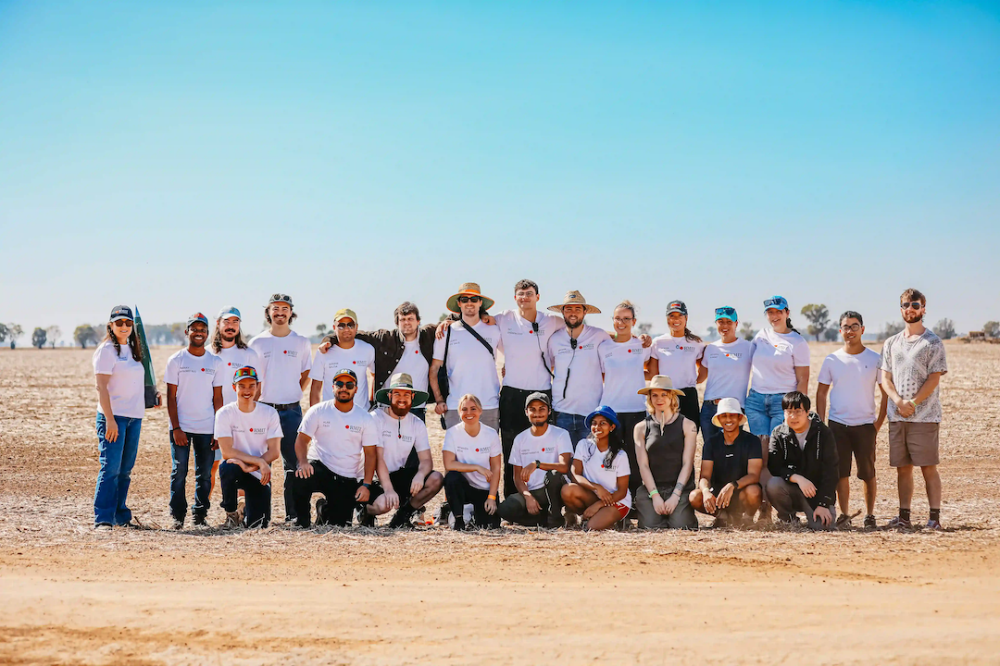

Since 2025, I have been an academic advisor to the RMIT HIVE IREC team, which is RMIT's high powered rocketry club. The team participates in the International Rocket Engineering Competition (IREC). I supervise the development of the Ground Control Station (GCS), and have supervised multiple SCT Capstone teams in developing a live telemetry visualisation interface for the GCS. In 2026, the interface won the IREC Live Telemetry Visualisation challenge. The video of our 2026 launch, and telemetry interface is here:
| Year | Location | Result |
|---|---|---|
| 2026 | Texas, USA |
70th Place Overall 1st Place Live Telemetry Visualisation 2nd Place Hybrid 10k (Category) 2nd Place SDL Payload Challenge 2nd Place Best Photo (2026) |
| 2025 | Texas, USA | 63rd Place Overall Dr. Gil Moore Award for Innovation |
